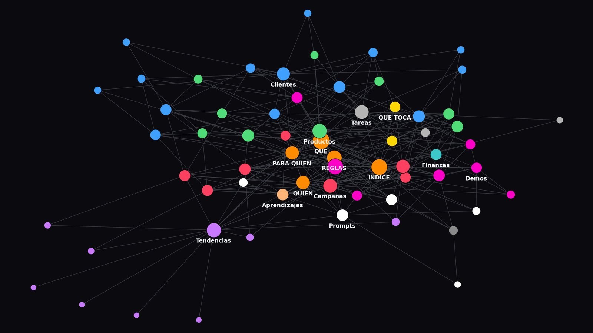
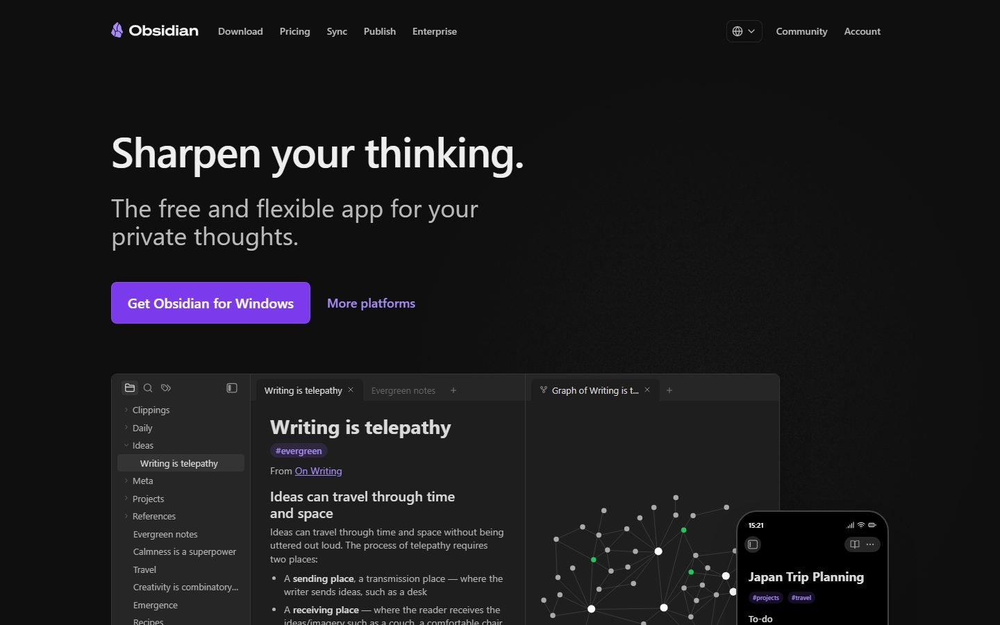
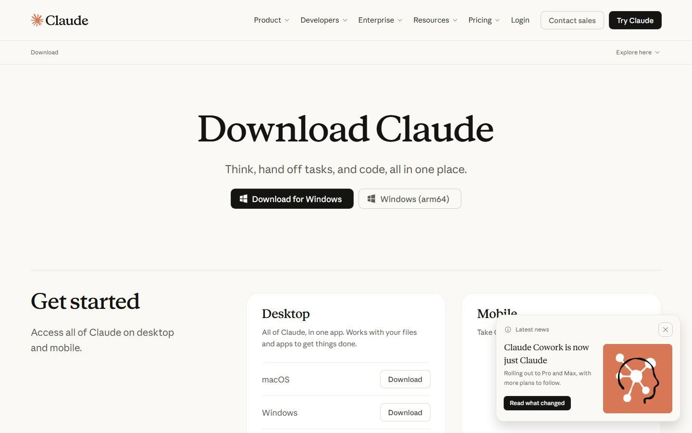
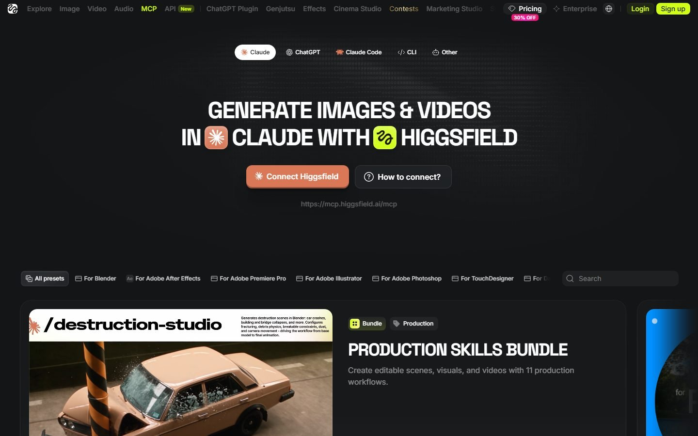
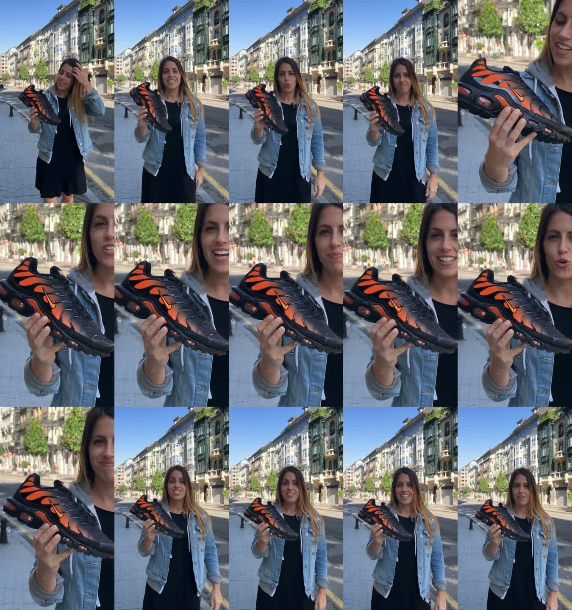
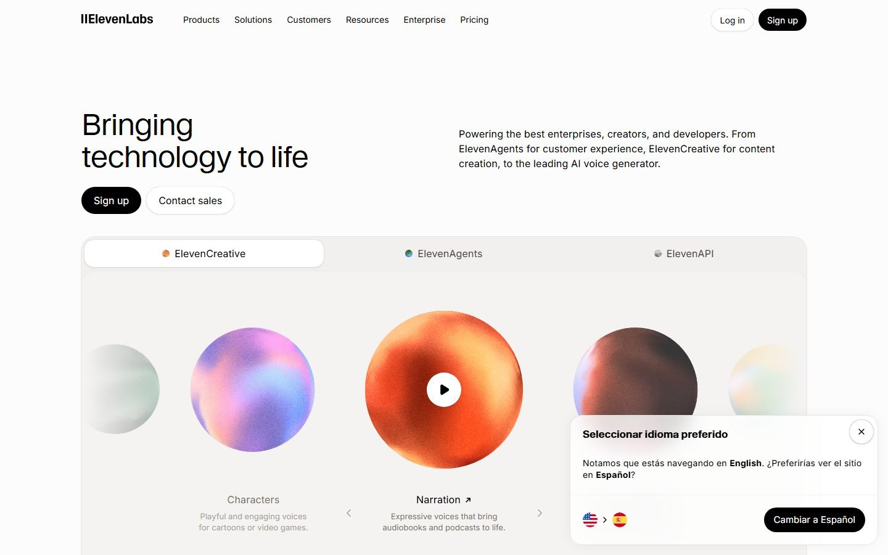
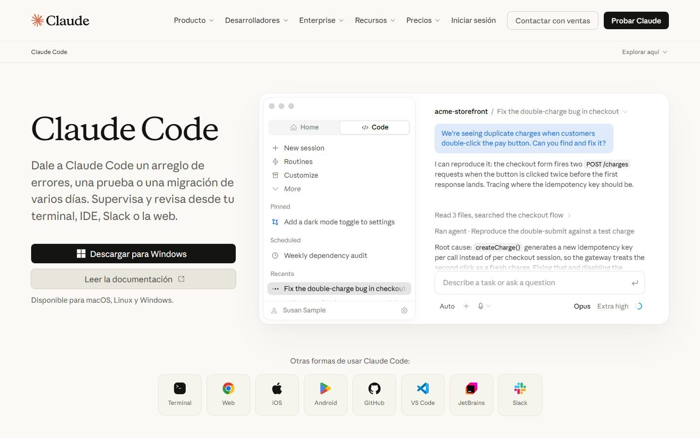
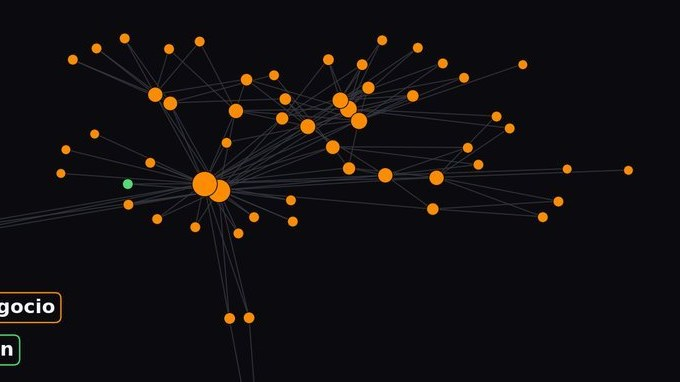

Semana de la IA 2026 · Cluster TIC Asturias · 25 de septiembre
El cerebro de tu empresa
Todo lo que has visto en la charla, paso a paso, para montarlo en tu empresa: el cerebro, los anuncios con IA, la voz clonada, las skills, los flujos de n8n y cómo publicar. Sin registro, sin correo.
Son archivos de texto (.md). Se abren con cualquier editor y con Obsidian.


Este es el QR de la charla. Apúntalo con la cámara del móvil y se abre esta misma web.
https://edrianexe.github.io/cerebro/


Empieza aquí
La semilla: de seis líneas a un cerebro
El primer paso, el del lunes. Seis líneas sobre tu negocio, un prompt, cuatro documentos y una pregunta real.

Montar el vault en Obsidian
Obsidian es gratis y lee carpetas de texto. Con la plantilla del kit tienes el mapa del cerebro en cinco minutos.

Conectar Claude a tu carpeta
Para que la IA lea el índice, abra solo lo que toca y escriba notas nuevas, sin copiar y pegar. Con Claude Code o con la app de escritorio.
Vídeo y anuncios

Conectar Higgsfield a Claude (MCP)
El conector oficial de Higgsfield para Claude: pasos verificados, qué necesitas y qué puede hacer.

La alternativa: Seedance y Kling desde Claude
El conector de generación con el que se hicieron los anuncios de la charla: Seedance 2.5 con voz en castellano y referencias de producto, persona y lugar.
Del cerebro al anuncio: el flujo completo
La skill anuncio-ia: cómo pasar de una foto de producto y cuatro documentos a un anuncio que vende, con control de calidad y etiqueta.

UGC o cinematográfico, y cómo convertir un vídeo tuyo en un spot
Cuándo va cada registro, y el truco que funcionó: personaje, movimiento y audio por separado para que la cara aguante.

Clon de voz profesional y avatar
Cómo se entrena un clon de voz que no suena a robot, con qué audio, y cómo se mete en HeyGen. Lo que hicimos esta semana, con sus reglas.
El sistema

Anatomía de una nota del cerebro
Instrucciones, llamadas, síntesis y decisiones. Por qué la nota apunta a los datos en vez de copiarlos.
La bandeja de notas sueltas y la revisión mensual
Los trucos que hacen que el cerebro se use: la bandeja que vacía la IA, la nota 'qué toca', cerrar sesión en cinco líneas.

El agente de tendencias mensual
Un prompt que rellena el radar cada mes con estado y fuente. Se adapta a competencia, normativa o precios cambiando un párrafo.
Tu primera skill
Una skill son cuatro bloques y tus ejemplos. Por qué las skills genéricas de marketing no funcionan y cómo escribir una que sí.
Ampliar el cerebro con un agente
Cómo añadir un área nueva (finanzas, proveedores, RRHH) sin romper lo que hay. Estructura primero, datos después, una pregunta al final.
n8n: Claude te monta los flujos
n8n repite, Claude construye, un agente trabaja para ti. Cómo conectar Claude al MCP oficial de n8n y pedirle el flujo en lenguaje normal, sin armarlo nodo a nodo.
Seguridad y ley
Publicar

Referencia

La guía completa: el cerebro de tu empresa
Todo el razonamiento: por qué ayuda a las personas, por qué el modelo gasta menos, los detractores y los trucos.

Patrones de los anuncios con IA que funcionaron
Los casos con cifras públicas: qué se repite en los que vendieron y en los que no.
Herramientas de septiembre de 2026, con fecha de caducidad
Lo que se usó en la charla y cuándo dejará de ser la mejor opción.
Los ejercicios: el del lunes y los cinco de después
Todos en el chat que ya usas. Tiempo real, no optimista.

Objeciones y preguntas frecuentes
Los detractores tienen razón en casi todo, y por eso las reglas son las que son.
Descargas
El kit completo
Plantilla del cerebro, prompts, skill anuncio-ia, cruz de tareas, ejercicios, herramientas.
La guía
El cerebro de tu empresa, completa, para leer en el tren.
La guía en web
La misma guía, para leer aquí.
Semana de la IA 2026 · Cluster TIC Asturias · 25 de septiembre · Adrián Nicieza, edrian.exe · contacto@edrianexe.com · @edrian.exe
Contenido generado con ayuda de IA y revisado por un humano. Datos de la tienda de ejemplo, simulados.